Project: U-Rack
An answer to one of the problems of Campus Life
The Story

Problem
Here's the deal, Atlanta's an odd city in some ways.
Live-Work-Play facilities like Ponce City Market or Atlantic Station live in juxtaposition to sprawling suburbs that essentially demand vehicle access to get to where you need to be. In the case of Georgia Tech, a lot of things on and around campus are simultaneously nearby and far away depending on how much time you have (which usually is less than we anticipate). It's not really a surprise that many students on campus are cyclists. They are an integral part of campus life. Our team knew early on we wanted to focus on safety and security as our problem space, as early as our first meeting together. Here's the story so far:
Research
The way to tackle this problem was to interact directly with our user group and hear their concerns directly from them. Through surveys, interviews, and observation we found that a lot of the safety and security issues pertinent to cyclists on campus boiled down to two things: bike storage and navigating around pedestrians and cars. We decided to analyze these problems concurrently to figure out where the real user needs lay.
What we Found
Navigation
When we originally surveyed and interviewed students about their feelings of perceived safety, our team was asking these questions with the mental context of crime and property theft. However, our users surprised us by telling us that the things that made them feel safe or unsafe on campus had to do with avoiding unobservant pedestrians and cars more than anything else. In talking to subject matter experts and facilities management, this problem seemed very salient as bikers will often end up sharing the same space as a pedestrian or car. This could mean that students are spending more time and cognitive resources cooperating in the same space than necessary to travel from point A to point B on campus.Storage
We talked to GTPD and they said a lot of their time is spent on processing reports of bike theft. Many of the students that we talked to either knew someone who had their bike stolen or were victims of bike theft themselves! Most of the time this happened when the student's bike was locked up at a rack for a period of time (e.g. during class or at their apartment for the night). Another issue with storage is that bike racks are at a premium for space during peak times of the day. This means that students were not finding solutions for parking their bike easily and safely.

Pictured above: examples of modern art
Design and Development
Ultimately, we decided to tackle the issue of bike storage on campus. Participants cited storage and security as a more pressing issue needing to be addressed on campus than that of navigation, which can be way more nebulous and nuanced than the resources we had at our disposal. From here we started generating ideas, starting from a couple dozen and narrowing down to a few ideas. Our team attended a design sprint to help us narrow down our remaining concepts to a single idea, the U-Rack.
We conducted usability testing etc etc
Here's a few pictures from our ideation and narrowing sessions
Features
The U-Rack is a bicycle security ecosystem that addresses safety on several fronts.
words words WAOW WORDS

Nulla viverra sem sit amet arcu tincidunt, at ultricies nisi hendrerit. Suspendisse blandit nisl id tincidunt ullamcorper. Etiam fringilla neque nibh, id sollicitudin lectus vestibulum non. Phasellus tincidunt sem purus, vel viverra ipsum viverra et. Donec dolor lorem, semper sagittis orci in, varius aliquam nisl.
Nulla viverra sem sit amet arcu tincidunt, at ultricies nisi hendrerit. Suspendisse blandit nisl id tincidunt ullamcorper. Etiam fringilla neque nibh, id sollicitudin lectus vestibulum non. Phasellus tincidunt sem purus, vel viverra ipsum viverra et. Donec dolor lorem, semper sagittis orci in, varius aliquam nisl. Integer posuere mollis ipsum et imperdiet. In in est ac eros maximus consequat.
Gallery